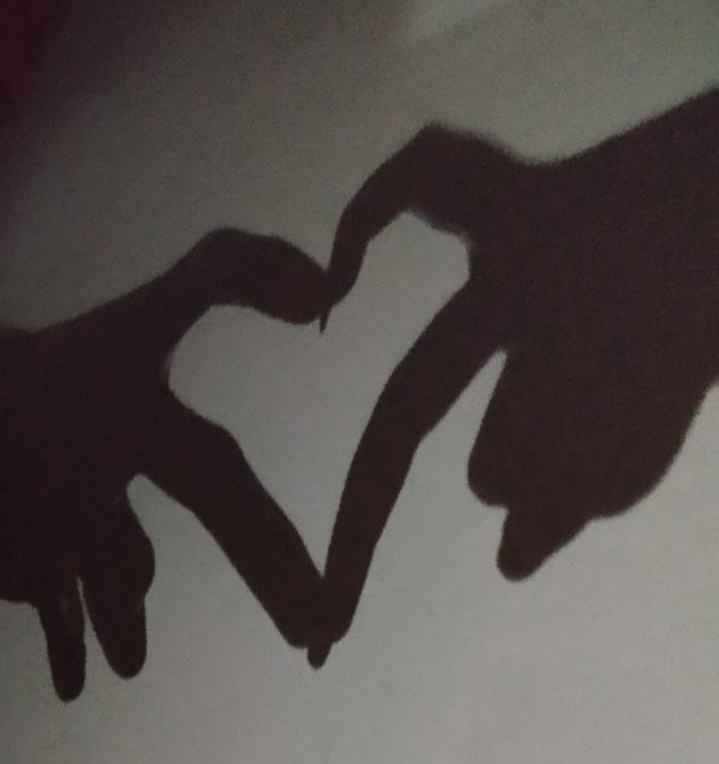
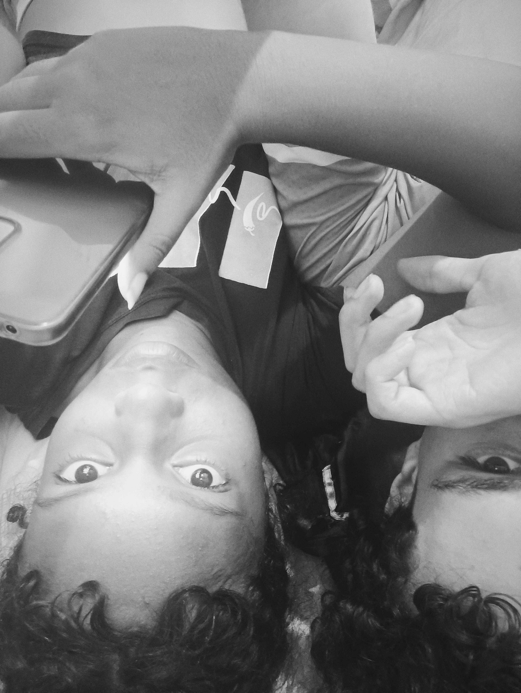
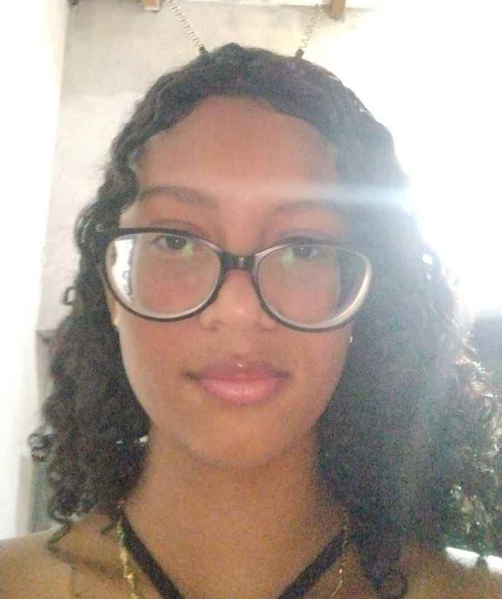
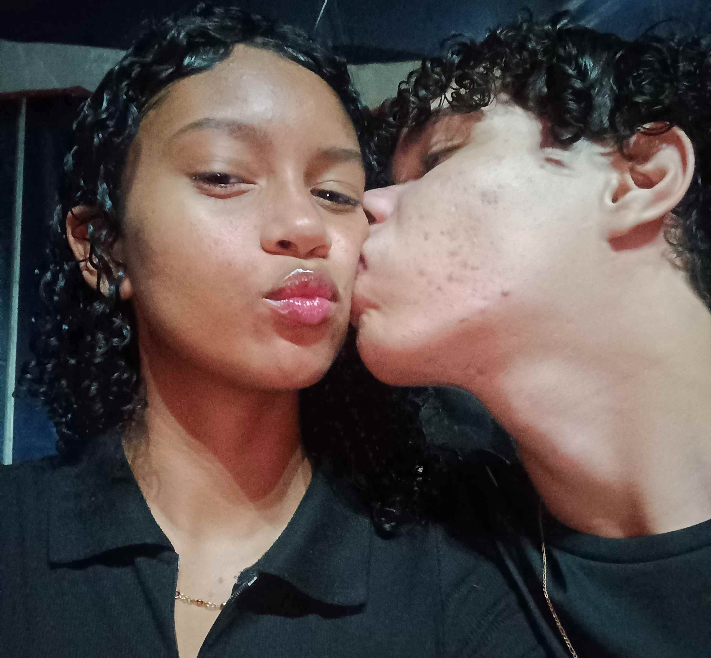

Início
Oi gatinha kkk, bom, eu pensei em fazer isso de diversas formas, todas definitivamente criativas, mas pensei, que tal fazer isso como um programador? Essa cartinha vai ser construída em cima de subtópicos que eu acredito que possam te convencer que eu gosto de você, e que, sei lá, você deva me dar uma chance. É só uma cartinha, afinal, é somente para dar uma forma física ao que eu estou sentindo.
Um passo antes, por que você?
Bom, o subtópico já é bem autoexplicativo, irei para a resposta. Eu te começo a te conhecer em 2022, no 1° ano do EM (e pensar que estamos no 3° ano) e, bom, a gente começa consideravelmente rápido demais, não tivemos tempo para nos conhecer realmente, então nosso relacionamento tem o primeiro rompimento. Logo nós damos a chance de nos conhecer novamente, ficamos um tempo, acontecem alguns erros meus, então terminamos novamente. Ficamos uns 6 meses sem nos comunicar ativamente (período de 2023). Então chega 2024, você sai de um relacionamento, e eu finalmente posso ter uma chance com você, então a gente volta a namorar. Bom, isso foi um resumo do que aconteceu, mas preciso voltar à pergunta do tópico, POR QUE VOCÊ?
Finalmente, por que você?
Queria começar com um "eu te amo", mas iria parecer muito emocionado kkkkkk, definitivamente. Bom, eu te amo. Quando a gente vai naquele primeiro encontro no parque, eu já te comentei que não esperava nada da gente, definitivamente aquela foi uma ou a última vez que te vi com um olhar de "amizade", eu me apaixonei por você.
Final (Recomeço fia, sai)
É, essa cartinha tem muito humor talvez (eu estou tentando fazer isso o menos dramático possível). Mas, bom, o final é basicamente onde estamos. Bom, não irei falar exatamente o que aconteceu, pois alguém pode ter acesso a esse site (relaxa, ninguém vai ter, mas ainda assim). Você sabe o que aconteceu, foi um erro meu ter feito aquilo, me arrependo muito, muito, muito. Óbvio, eu sei que terminamos não por um motivo alheio como pode ser considerado os motivos passados, mas eu ainda me encontro na mesma situação. Eu te amo muito garota, eu quero estar com você agora. Talvez você ache que eu te veja apenas como uma menina bonita (você é bonita mesmo), mas não, você é meu amor, não "meu amor" como um modo de chamar, mas como realmente o que está escrito. Essa cartinha pode ter alguns erros, pois só tem a minha visão aqui, mas acredito que você mereça alguém melhor do que eu, mas mesmo que você ou eu acredite que o Bruno não seja o melhor, eu te digo que ele vai procurar sim ser o melhor, sempre e sempre. Ele vai te esperar, seja 1 mês, 2 meses, 3 meses, 1 ano. Ele vai estar procurando ser o melhor para ti nesse período, ele vai aprender a ser suficiente para você. E enfim, é uma CARTINHA. Clica aí no botãozinho, é uma música fofa (sim, quero que você observe a tradução -.-) ❤️
